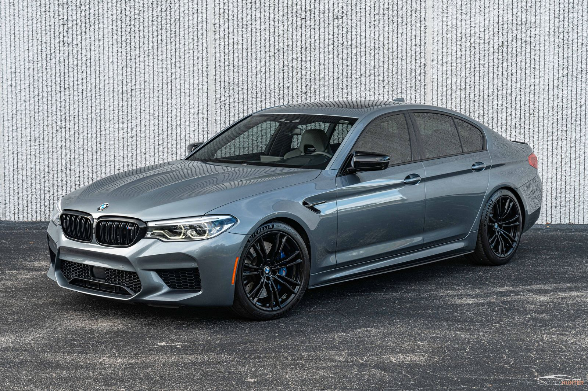
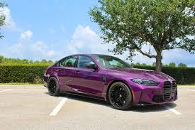

The BMW M5 is a legendary performance sedan that first appeared in 1984. It combined the comfort of the 5 series with the power of supercar engine. One of its most famous versions the e60 M5 had a V10 thta revved over 8,000 RPM. Modern BMW M5s feature advanced tech, insane speed, and even can switch from all wheel drive to rear wheel drive.
The BMW M3 is one the most famous sports cars in the world. It debuted in 1986 as a race inspired version of the 3 series BMW. The first E30 M3 became a motorsport icon with its great steering wheel handling. Each new generation of the BMW M3 has kept the balance of speed, agility, and daily usability.
Cool images of the BMW M5 & M3  Read here for more information about BMW's BMW info More info on BMW's
| Model | Description |
|---|---|
| BMW M3 | A legendary sports car known for agility and performance. |
| BMW M5 | A powerful performance sedan with supercar-level speed. |